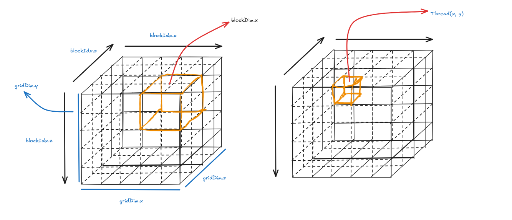
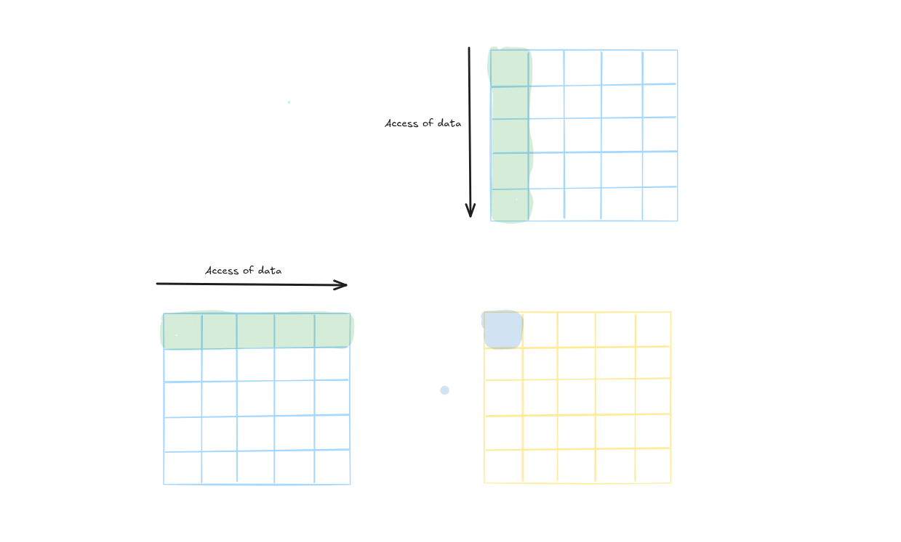
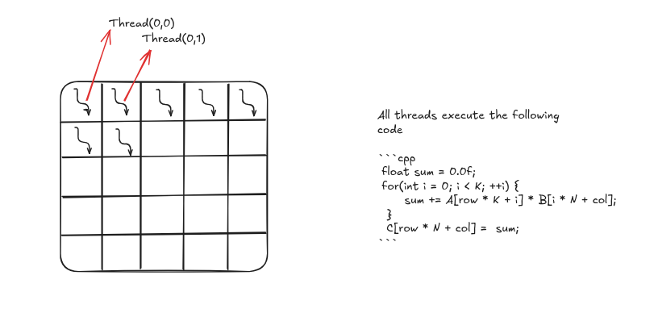

Before discussing the topic, let's talk about the hardware that runs these operations. GPUs (Graphics Processing Units) are specialized hardware designed to run multiple operations simultaneously for rendering games, running simulations, and more. There are two major players in this race: AMD(Team Red) and NVIDIA(Team Green). Both compete neck-to-neck when it comes to gaming, but the story is different in machine learning and compute. NVIDIA has been dominating the AI market, until AMD introduced the RDNA4 and CDNA4 architectures. This architecture brings significant improvements in compute performance and AI workloads, featuring FP8 and INT4 with structured sparsity, improved power efficiency, and better support for drivers on linux by offering competitive performance at potentially better price points, giving developers and researchers more options when building AI systems and there is one more reason (personal choice) to choose AMD which is opensource ecosystsem unlike NVIDIA vendor locking of CUDA and its license constraints.
HIP (Heterogeneous-Compute Interface for Portability) is a C++ runtime API and kernel language that uses LLVM to provide an interface for AMD GPUs—similar to CUDA but less mature. HIP enables programming thousands of GPU cores to execute parallel operations simultaneously.
Gpu's leverages the SIMD (Single Instruction, Multiple Data) programming model excels in branchless programming techniques, where conditional logic is minimized allowing the same operation to be performed across multiple data points simultaneously, maximizing GPU throughput.
Before the code and implementation lets understand some terminologies of HIP programming.

The HIP computation is orderd in three hierarchy level. Each initialization of hip code create a grid first then creates blocks and then threads. Threads which are in same block access the same memory region.
↓
[Display Results] ← [Host Memory] ← [PCIe Transfer] ← [Device Memory]
Problem Formulation
Given two matrices \( A \in \mathbb{R}^{m \times k} \) and \( B \in \mathbb{R}^{k \times n} \), we seek to compute their product \( C = A \times B \) where \( C \in \mathbb{R}^{m \times n} \), such that:
\[ C_{ij} = \sum_{p=1}^{k} A_{ip} \cdot B_{pj} \]
for all \(i \in [1, m]\) and \(j \in [1, n]\).
Navie Implementation
Naive implementation in matrix multiplication is the baasic algorithm that computes each element of the result matrix as the sum of pairwise products from the input matrices' corresponding row and column
How It Works

For matrices A (m × n) and B (n × p), the result C (m × p) has each entry C[i][j] calculated via a triple nested loop: for each i and j, sum A[i][k] * B[k][j] over k from 0 to n-1
For Navie kernel, we’ll use the grid, block and thread hierarchy to assign each thread a unique entry in the result matrix C. Then that thread will compute the dot product of the corresponding row of A and column of B, and write the result to C. Due to each location of C being written to by only one thread, we have to do no synchronization
/*
* @info - The function multiply two matrix of size A[MxK] and B[KxN] which will return a matrix C[MxN]
* @param - A and B are constant matrix and C will be the output matrix
* @param - M, N and K are the size of matrix rows and cols w.r.t matrix
*/
__global__ void matrixMultiplication(const float* A, const float* B, float* C, int M, int N, int K) {
int row = threadIdx.y + blockIdx.y * blockDim.y;
int col = threadIdx.x + blockIdx.x * blockDim.x;
if (row < M && col < N) {
float sum = 0.0f;
for(int i = 0; i < K; ++i) {
sum += A[row * K + i] * B[i * N + col];
}
C[row * N + col] = sum;
}
}
The Code mention below the compute function for each thread in the computation 
While the naive implementation demonstrates the fundamental concepts of HIP programming and parallel matrix multiplication, it's important to recognize that this is merely the starting point. The naive kernel, though functionally correct, suffers from significant performance bottlenecks that prevent it from achieving optimal GPU utilization.
The primary limitation lies in memory access patterns. Each thread repeatedly accesses global memory for elements of matrices A and B, resulting in poor memory bandwidth utilization and high latency. Modern GPUs have complex memory hierarchies including shared memory, L1 and L2 caches, and registers, which the naive implementation fails to exploit effectively. Additionally, there's no memory coalescing optimization, meaning adjacent threads may access non-contiguous memory locations, further degrading performance.